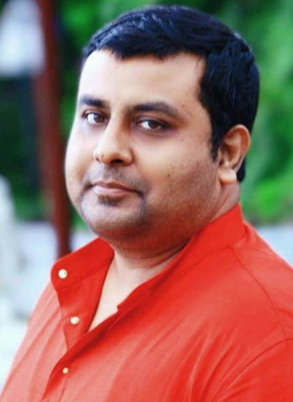

Abhishek Chakraborty
|  | Postdoctoral Scholar Email: a1chakraborty Φ ucsd Ω edu / abhishek2003slg Φ ieee Ω org [Φ: AT, Ω: DOT]
|
Biography
Postdoctoral Scholar (July 2021 - Present)
Mentor: Prof. Ramesh R. Rao, Director, Qualcomm Institute, Professor, Electrical and Computer Engineering, Jacobs School of Engineering, & QUALCOMM Endowed Chair in Telecommunications and Information Technology
Qualcomm Institute - UC San Diego Division of Calit2
University of California, San Diego
9500 Gilman Drive, La Jolla, CA 92093-0436, USA.
Visiting Research Collaborator (March 2021 - June 2021)
Systems and Networks Lab (SNL)
Department of Avionics
Indian Institute of Space Science and Technology (IIST)
Thiruvananthapuram, Kerala 695547, India.
Senior Project Officer (December 2020 - February 2021)
Department of Computer Science and Engineering
Indian Institute of Technology Madras (IIT Madras)
Chennai, Tamil Nadu 600036, India.
Institute Post Doctoral Fellow (August 2018 - November 2020)
Mentor: Prof. C. Siva Ram Murthy, Richard Karp Institute Chair Professor
High Performance Computing and Networking (HPCN) Lab
Department of Computer Science and Engineering
Indian Institute of Technology Madras (IIT Madras)
Chennai, Tamil Nadu 600036, India.
Senior Project Fellow (August 2017 - August 2018)
Department of Avionics
Indian Institute of Space Science and Technology (IIST)
Thiruvananthapuram, Kerala 695547, India.
Doctor of Philosophy (2012 - 2018)
Thesis: On the Evolution of Finite Sized Complex Networks (Link)
Advisor: Prof. B. S. Manoj, Professor
Systems and Networks Lab (SNL)
Department of Avionics
Indian Institute of Space Science and Technology (IIST)
Thiruvananthapuram, Kerala 695547, India.
Master of Engineering (2010 - 2012)
Specialization: Wireless Communications
Thesis: Capacity Enhancement in Indoor Wireless Communication Systems
Advisor: Dr. Sanjay Kumar, Associate Professor
Department of Electronics and Communication Engineering
Birla Institute of Technology (BIT), Mesra
Ranchi, Jharkhand 835215, India.
Programmer Analyst (2007 - 2009)
Cognizant, Inc.
Kolkata, West Bengal 700091, India.
Bachelor of Technology (2003 - 2007)
Department of Electronics and Communication Engineering
College of Engineering and Management, Kolaghat (CEMK)
Aff. to Maulana Abul Kalam Azad University of Technology [Formerly West Bengal University of Technology (WBUT)]
Kolaghat, West Bengal 721171, India.